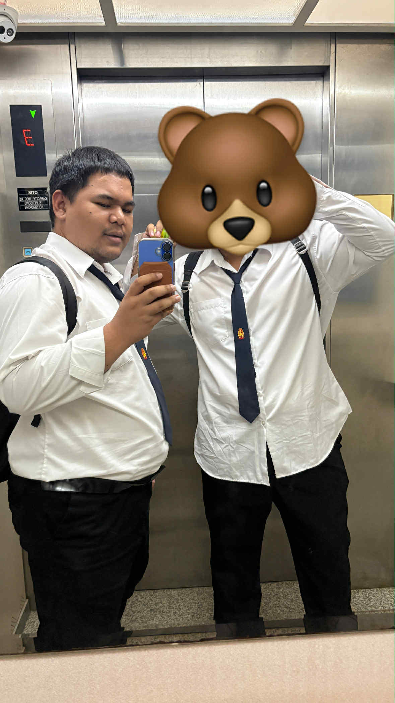

สวัสดีครับ ผมชื่อ ธีรเดช ศรีสวัสดิ์ ผมเป็นคนที่ชื่นชอบการสร้างเว็บไซต์ที่ดูเรียบง่าย ทันสมัย และใช้งานสะดวก ผมสนุกกับการเรียนรู้เทคโนโลยีใหม่ ๆ และนำมาพัฒนาเว็บไซต์ที่มีประโยชน์ต่อผู้คน
ปัจจุบันกำลังศึกษาอยู่ที่
King Mongkut's University of Technology North Bangkok (KMUTNB)
มหาวิทยาลัยเทคโนโลยีพระจอมเกล้าพระนครเหนือ
เป้าหมายของผมคือการพัฒนาไปสู่การเป็นนักพัฒนาเว็บไซต์แบบ Full Stack ที่สามารถสร้างระบบได้ครบวงจรและร่วมงานกับผู้อื่นเพื่อสร้างประสบการณ์ดิจิทัลที่มีคุณค่า
ชอบตีแบด 🙂